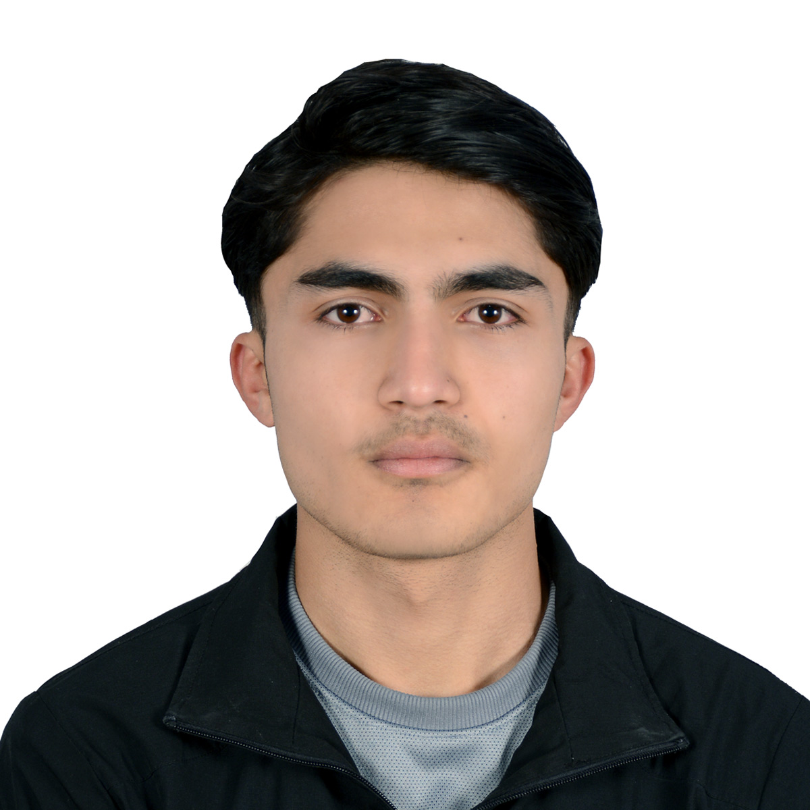

Samrat Poudel

Summary:
An ambitious, hardworking and kind individual.
Education:
Completed Secondary level schooling in 2022 from SOS HGS Sanothimi(Science Stream).
Training and Courses:
- Professional Barista Training
- Fundamentals of C and C++ from Broadway Infosys, Kathmandu
- Introduction to CS by Harvard X at edx.
- Web Develeopment bootcamp at Udemy.
Skills:
- Basic Computer, Leadership,Communication and Problem Solving skills
Others:
Apart of my learnings, my
Hobbies and Ambitions also help defining me.